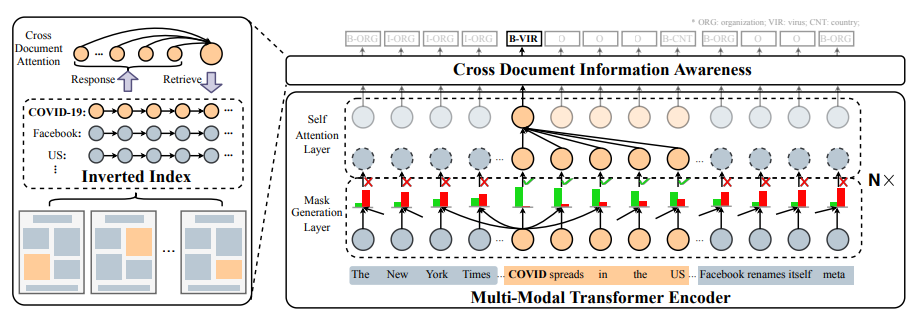
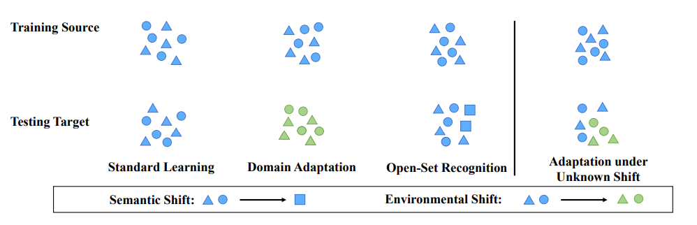
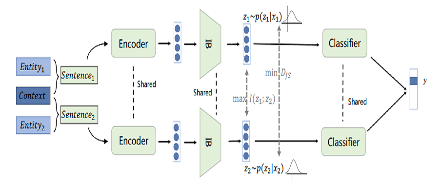
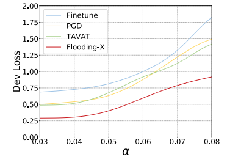
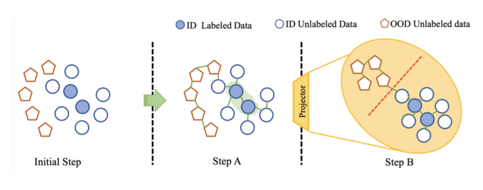
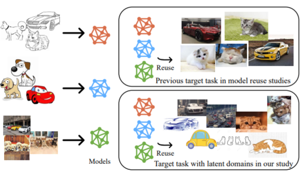

Conference Papers

Distilling Object Detectors With Global Knowledge
Sanli Tang, Zhongyu Zhang, Zhanzhan Cheng, Jing Lu, Yunlu Xu, Yi Niu, Fan He
Accepted by
ECCV 2022
[Paper] [Code]

Dynamic Low-Resolution Distillation for Cost-Efficient End-to-End Text Spotting
Ying Chen*, Liang Qiao*, Zhanzhan Cheng, Shiliang Pu†, Yi Niu, Xi Li†
Accepted by
ECCV 2022
[Paper] [Code] [Poster]

DavarOCR: A Toolbox for OCR and Multi-Modal Document Understanding
Liang Qiao, Hui Jiang, Ying Chen, Can Li, Pengfei Li, Zaisheng Li, Baorui Zou, Dashan Guo, Yingda Xu, Yunlu Xu, Zhanzhan Cheng†, Yi Niu
Accepted by
ACMMM 2022 (Open-Source Software Competition)
[Paper] [Code] [Poster]

End-to-End Compound Table Understanding with Multi-Modal Modeling
Zaisheng Li*, Yi Li*, Liang Qiao*, Pengfei Li, Zhanzhan Cheng, Yi Niu, Shiliang Pu, Xi Li†
Accepted by
ACMMM 2022 (Oral)
[Paper] (To be published) [Code] (To be published)

PMAL: Open Set Recognition via Robust Prototype Mining
Jing Lu*, Yunlu Xu*, Hao Li, Zhanzhan Cheng†, Yi Niu
Accepted by
AAAI 2022
[Paper] [Code] (To be published) [Slides] [Poster]

A Strong Baseline for Semi-Supervised Incremental Few-Shot Learning
Linglan Zhao, Dashan Guo, Yunlu Xu†, Liang Qiao, Zhanzhan Cheng, Shiliang Pu, Yi Niu, and Xiangzhong Fang
Accepted by
BMVC 2021
[Paper]

LGPMA: Complicated Table Structure Recognition with Local and Global Pyramid Mask Alignment
Liang Qiao*, Zaisheng Li*, Zhanzhan Cheng†, Peng Zhang, Shiliang Pu, Yi Niu, Wenqi Ren, Wenming Tan, and Fei Wu
Accepted by
ICDAR 2021 (Oral), Best Industry Paper
[Paper] [Code] [Slides] [Video]

VSR: A Unified Framework for Document Layout Analysis combining Vision, Semantics and Relations
Peng Zhang, Can Li, Liang Qiao, Zhanzhan Cheng†, Shiliang Pu, Yi Niu and Fei Wu
Accepted by
ICDAR 2021 (Oral)
[Paper] [Code] [Slides] [Video]

Reciprocal Feature Learning via Explicit and Implicit Tasks in Scene Text Recognition
Hui Jiang*, Yunlu Xu*, Zhanzhan Cheng†, Shiliang Pu, Yi Niu, Wenqi Ren, Fei Wu, Wenming Tan
Accepted by
ICDAR 2021 (Oral)
[Paper] [Code] [Slides] [Video]

MANGO: A Mask Attention Guided One-Stage Scene Text Spotter
Liang Qiao*, Ying Chen*, Zhanzhan Cheng, Yunlu Xu, Yi Niu, Shiliang Pu†, Fei Wu
Accepted by
AAAI 2021
[Paper] [Code] [Poster] [Slides]

SPIN: Structure-Preserving Inner Offset Network for Scene Text Recognition
Chengwei Zhang*, Yunlu Xu*, Zhanzhan Cheng†, Shiliang Pu, Yi Niu, Fei Wu, Futai Zou
Accepted by
AAAI 2021
[Paper] [Code]

Text Recognition in Real Scenarios with a Few Labeled Samples
Jinghuang Lin, Zhanzhan Cheng, Fan Bai, Yi Niu, Shiliang Pu, Shuigeng Zhou†
Accepted by
ICPR 2020
[Paper]

Recognizing Multiple Text Sequences from an Image by Pure End-To-End Learning
Zhenlong Xu, Shuigeng Zhou†, Fan Bai, Zhanzhan Cheng, Yi Niu, Shiliang Pu
Accepted by
ICPR 2020
[Paper]

TRIE: End-to-End Text Reading and Information Extraction for
Document Understanding
Peng Zhang*, Yunlu Xu*, Zhanzhan Cheng, Shiliang Pu†, Jing Lu, Liang Qiao, Yi Niu, Fei Wu
Accepted by
ACMMM 2020
[Paper] [Code] [Slides]

Text Perceptron: Towards End-to-End Arbitrary-Shaped Text Spotting
Liang Qiao, Sanli Tang, Zhanzhan Cheng†, Yunlu Xu, Yi Niu, Shiliang Pu, Fei Wu
Accepted by
AAAI 2020 (Oral)
[Paper] [Code] [Supplementary] [Poster] [Presentation Video]

REAPS: Towards Better Recognition of Fine-grained Images by Region Attending and Part Sequencing
Peng Zhang, Xinyu Zhu, Zhanzhan Cheng†, Shuigeng Zhou, Yi Niu
Accepted by
PRCV 2019
[Paper] [Poster]

You Only Recognize Once: Towards Fast Video Text Spotting
Zhanzhan Cheng*, Jing Lu*, Yi Niu, Shiliang Pu, Fei Wu†, Shuigeng Zhou
Accepted by
ACMMM 2019
[Paper] [Dataset] [Code] [Poster] [Spotlights] [Demo]

Adversarial Seeded Sequence Growing for Weakly-Supervised Temporal Action Localization
Chengwei Zhang, Yunlu Xu, Zhanzhan Cheng†, Yi Niu, Shiliang Pu, Fei Wu, Futai Zou
Accepted by
ACMMM 2019
[Paper] [Poster] [Spotlights]

Segregated Temporal Assembly Recurrent Networks for Weakly Supervised Multiple Action Detection
Yunlu Xu*, Chengwei Zhang*, Zhanzhan Cheng†, Jianwen Xie, Yi Niu, Shiliang Pu, Fei Wu
Accepted by
AAAI 2019 (Oral)
[Paper] [Slides]

Edit Probability for Scene Text Recognition
Fan Bai, Zhanzhan Cheng, Yi Niu, Shiliang Pu, Shuigeng Zhou†
Accepted by
CVPR 2018
[Paper]

AON: Towards Arbitrarily-Oriented Text Recognition
Zhanzhan Cheng, Yangliu Xu, Fan Bai, Yi Niu, Shiliang Pu, Shuigeng Zhou†
Accepted by
CVPR 2018
[Paper] [Poster]

Focusing Attention: Towards Accurate Text Recognition in Natural Images
Zhanzhan Cheng, Fan Bai, Yunlu Xu, Gang Zheng, Shiliang Pu, Shuigeng Zhou†
Accepted by
ICCV 2017
[Paper] [Poster]
Cooperation Papers

Read Extensively, Focus Smartly: A Cross-document Semantic
Enhancement Method for Visual Documents NER
Jun Zhao, Xin Zhao, Wenyu Zhan, Tao Gui, Qi Zhang, Liang Qiao, Zhanzhan Cheng, Shiliang Pu
Accepted by
COLING 2022
(cooperation paper)
[Paper]

Active Model Adaptation Under Unknown Shift
Jiejing Shao, Yunlu Xu, Zhanzhan Cheng, Yufeng Li
Accepted by
KDD 2022
(cooperation paper)
[Paper]

MINER: Improving Out-of-Vocabulary Named Entity Recognition from an Information Theoretic Perspective
Xiao Wang, Shihan Dou, Limao Xiong, Yicheng Zou, Qi Zhang, Tao Gui, Liang Qiao, Zhanzhan Cheng, Xuanjing Huang
Accepted by
ACL 2022
(cooperation paper)
[Paper]

Flooding-X: Improving BERT’s Resistance to Adversarial Attacks via Loss-Restricted Fine-Tuning
Qin Liu, Rui Zheng, Rong Bao, Jingyi Liu, ZhiHua Liu, Zhanzhan Cheng, Liang Qiao, Tao Gui, Qi Zhang, Xuanjing Huang
Accepted by
ACL 2022
(cooperation paper)
[Paper]

STEP : Out-of-Distribution Detection in the Presence of Limited In-distribution Labeled Data
Zhi Zhou, Lanzhe Guo, Zhanzhan Cheng, Yufeng Li†, Shiliang Pu
Accepted by
NeurIPS 2021
(cooperation paper)
[Paper]

Towards Robust Model Reuse in the Presence of Latent Domains
Jiejing Shao, Zhanzhan Cheng, Yufeng Li†, Shiliang Pu
Accepted by
IJCAI 2021
(cooperation paper)
[Paper]
Journal Papers

FREE: A Fast and Robust End-to-End Video Text Spotter
Zhanzhan Cheng*, Jing Lu*, Baorui Zou, Liang Qiao, Yunlu Xu, Shiliang Pu†, Yi Niu, Fei Wu, Shuigeng Zhou
Accepted by
TIP 2021
[Paper]
Technique Reports

2nd Place Solution SSLAD Track 1 - O2O Semi-Supervised Framwork
Beitong Zhou*, Donghao Gu*, Binbin Zhang*, Sanli Tang, Yunlu Xu†, Zhanzhan Cheng, Yi Niu
Technique report of
ICCV 2021 Workshop SSLAD Track-1
competition.
[Paper]

Technical Report for ICCV 2021 Challenge SSLAD-Track3B: Transformers Are Better Continual Learners
Duo Li*, Guimei Cao*, Yunlu Xu, Zhanzhan Cheng, Yi Niu
Technique report of
ICCV 2021 Workshop SSLAD Track-3B
competition.
[Paper]

ICDAR 2021 Competition on Scene Video Text Spotting
Zhanzhan Cheng*, Jing Lu*, Baorui Zou*, Shuigeng Zhou, Fei Wu
Technique report of
ICDAR 2021 SVTS
competition
[Paper] [Poster] [Video]

ICDAR 2021 Competition on Robust Reading Challenge - ICText
Qiyao Wang*, Pengfei Li*, Li Zhu, Yi Niu
Technique report of
ICDAR 2021 RRC-ICText
competition
[Paper]
Manuscripts (Preprints)

E2-AEN: End-to-End Incremental Learning with Adaptively Expandable Network
Guimei Cao*, Zhanzhan Cheng*, Yunlu Xu*, Duo Li, Shiliang Pu, Yi Niu, Fei Wu
Available on
arXiv
[Paper]

TRIE++: Towards End-to-End Information Extraction from Visually Rich Documents
Zhanzhan Cheng*, Peng Zhang*, Can Li*, Qiao Liang, Yunlu Xu, Pengfei Li, Shiliang Pu, Yi Niu, Fei Wu
Available on
arXiv
[Paper]

Learning a Domain Classifier Bank for Unsupervised Adaptive Object Detection
Sanli Tang, Zhanzhan Cheng, Shiliang Pu, Dashan Guo, Yi Niu, Fei Wu
Available on
arXiv
[Paper]

Object-QA: Towards High Reliable Object Quality Assessment
Jing Lu*, Baorui Zou*, Zhanzhan Cheng*, Shiliang Pu, Shuigeng Zhou, Yi Niu, Fei Wu
Available on
arXiv
[Paper]

Refined Gate: A Simple and Effective Gating Mechanism for Recurrent Units
Zhanzhan Cheng*, Yunlu Xu*, Mingjian Cheng, Yu Qiao, Shiliang Pu, Yi Niu, Fei Wu
Available on
arXiv
[Paper]